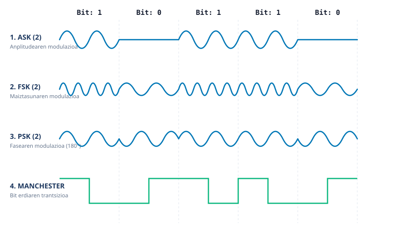

Sare Azpiegitura Fisikoa eta Seinaleak
Ikasgelako rack-ean kableatu egituratuaren muntaia (T568B), OSI 1-2 geruzen analisia, Admin_123 pasahitzaren ASCII kodeketa, CRC-6-GSM erroreen kontrola eta konexio probak.
1. OSI Ereduaren 1. eta 2. Geruzak
1. Geruza: Fisikoa (Physical Layer)
Bit-sekuentziak seinale elektriko moduan garraiatzen ditu kobrean zehar:
- Bitartekoa: UTP Cat 6 kableatua (4 pare bihurritu).
- Konektoreak: RJ-45 arrak eta patch-paneleko keystone emeak.
2. Geruza: Datu-Lotura (Data Link Layer)
Sare lokaleko tramen antolaketa eta helbideratze fisikoa kudeatzen ditu:
- Helbideratzea: MAC helbideak (zerbitzaria:
52:54:00:1e:ab:f1). - Gailua: 2. geruzako switch-a (talka-domeinuak banatzeko).
2. Kableatua (T568B) eta Tester Emaitzak
T568B estandarraren arabera krimpautako patch kableen jarraitutasun probak:
| Kablea | Ibilbidea | Pinak (1-8) | Egoera |
|---|---|---|---|
| KBL-01 | Lanpostua -> Patch Panela (1. ataka) | 1-2-3-4-5-6-7-8 | Zuzena (OK) |
| KBL-02 | Patch Panela (1) -> Switch (1) | 1-2-3-4-5-6-7-8 | Zuzena (OK) |
| KBL-03 | WindowsServer6Taldea -> Patch Panela (2) | 1-2-3-4-5-6-7-8 | Zuzena (OK) |
| KBL-04 | Patch Panela (2) -> Switch (2) | 1-2-3-4-5-6-7-8 | Zuzena (OK) |
3. Admin_123 Pasahitzaren ASCII eta CRC-6 Kalkulua
Sistemako probako pasahitza (Admin_123) ASCII formatura pasatuta:
| Karakterea | Hamartarra | Bitarra (8 bit) | Hex |
|---|---|---|---|
| A / d / m | 65 / 100 / 109 | 01000001 01100100 01101101 | 0x41 / 0x64 / 0x6D |
| i / n / _ | 105 / 110 / 95 | 01101001 01101110 01011111 | 0x69 / 0x6E / 0x5F |
| 1 / 2 / 3 | 49 / 50 / 51 | 00110001 00110010 00110011 | 0x31 / 0x32 / 0x33 |
CRC-6-GSM Polinomio sortzailea: G(x) = x^6 + x^5 + x^3 + x^2 + x + 1 (Bitarrean: 1101111)
Kalkulua: 72 biteko mezuari 6 zero gehitu eta modulo-2 XOR zatiketa egin da.
4. Seinale Modulazioak eta Manchester

1. irudia: ASK, FSK, PSK eta Manchester modulazio digitalen diagrama.
ASK (2)
Anplitudearen aldaketa bitaren arabera ('1' altua, '0' baxua).
FSK (2)
Maiztasunaren aldaketa ('1' maiztasun handia, '0' baxua).
PSK (2)
Fasearen aldaketa 180 gradu bit-aldaketetan (zarata aurrean sendoa).
Manchester
Tentsio-trantsizioa bit bakoitzaren erdian sinkronizaziorako.
5. Konektibitate Probak (192.168.70.2)
| Konexio Mota | Helburua (IP) | Paketeak | Galera | Latentzia |
|---|---|---|---|---|
| Kablez (Cat 6) | 192.168.70.2 (WindowsServer6Taldea) | 50 / 50 | % 0 | < 1 ms |
| Wi-Fi (5 GHz) | 192.168.70.2 (WindowsServer6Taldea) | 50 / 50 | % 0 | 3.2 ms |
| Wi-Fi (2.4 GHz) | 192.168.70.2 (WindowsServer6Taldea) | 50 / 49 | % 2 | 8.7 ms |
Gailu mugikor batetik Wi-Fi bidez http://192.168.70.2 atarira sarbide arrakastatsua egiaztatu da.